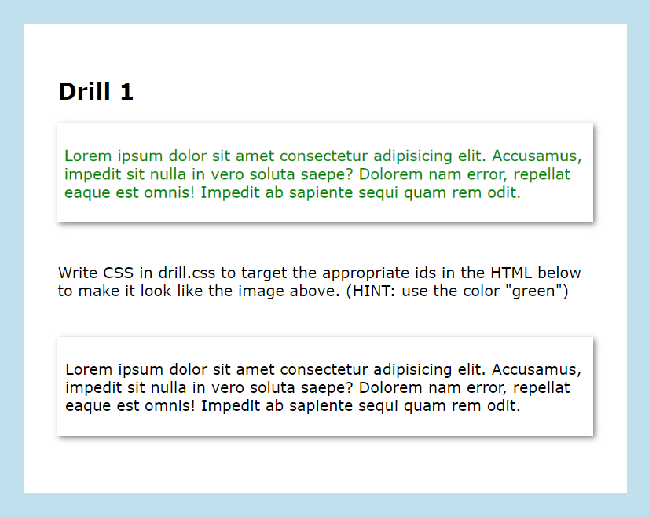
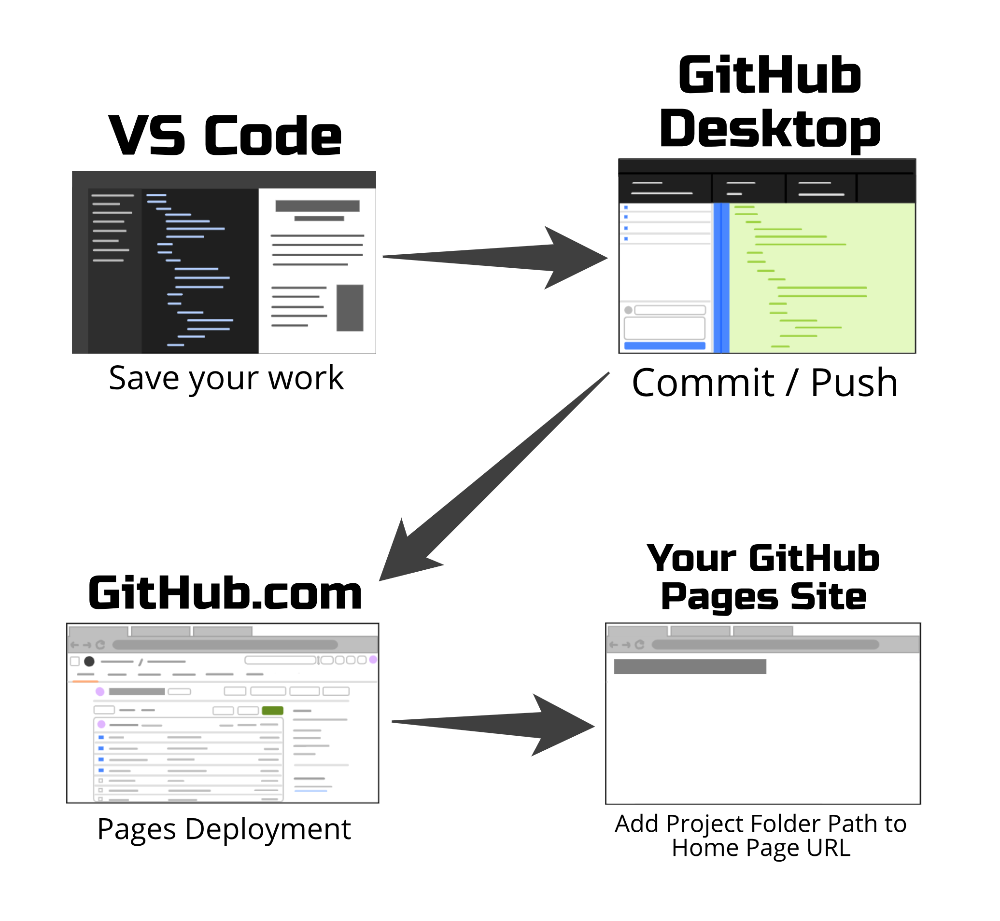

This is an example of what a drill looks like: there is a static image at the top, which is your visual goal, instructions in the middle (sometimes with a hint), and the live preview of your code at the bottom.
DRILLS
Drills are a new type of exercise that exist only in the Web Development course, geared at giving you a chance to practically apply recently learned coding skills in small, timed micro-exercises with nearly instantaneous feedback.
Each drill has pre-written code for you read, understand, and manipulate, along with a specific visual goal. You will have between 2-5 minutes to complete each drill, at your instructor's discretion. After completing the drill, your instructor will give you a potential solution to the drill, which you can compare to your own. Then you will move on to the next drill, until all drills are completed.
The goal of these exercises is to give you the chance to code quickly and fail safely; that is why these exercises are graded as complete/incomplete, and as long as you submit an attempt for each drill, you will get a complete for the assignment.
HOW TO COMPLETE:
If you're unsure about how to unzip the project template below, or how to get it into your repository, check out the following tutorial from the Coding Cookbook - Importing a Code Template.
HOW TO SUBMIT:
